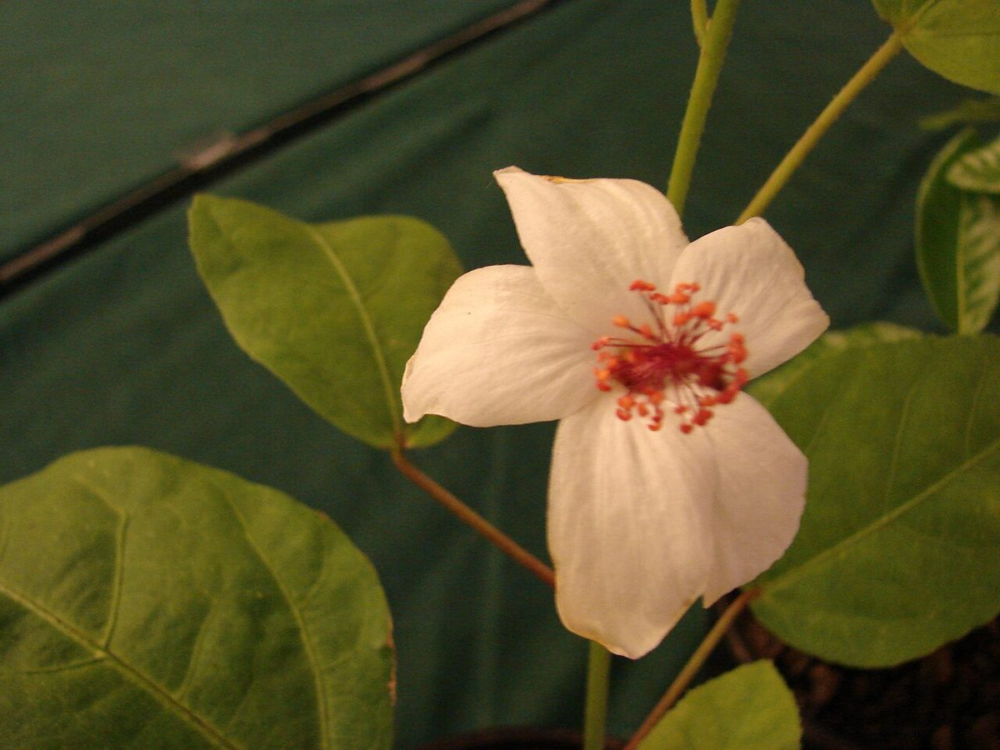
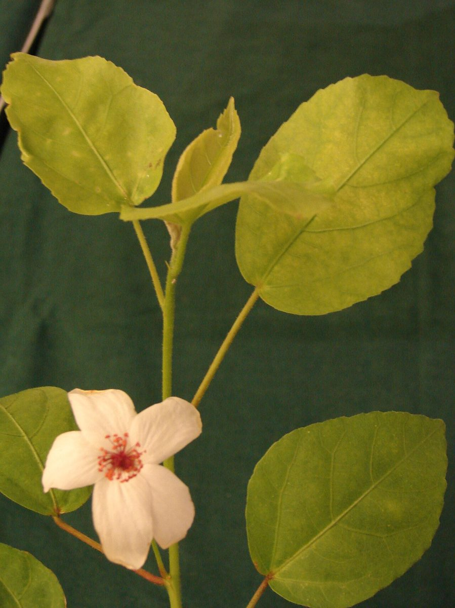
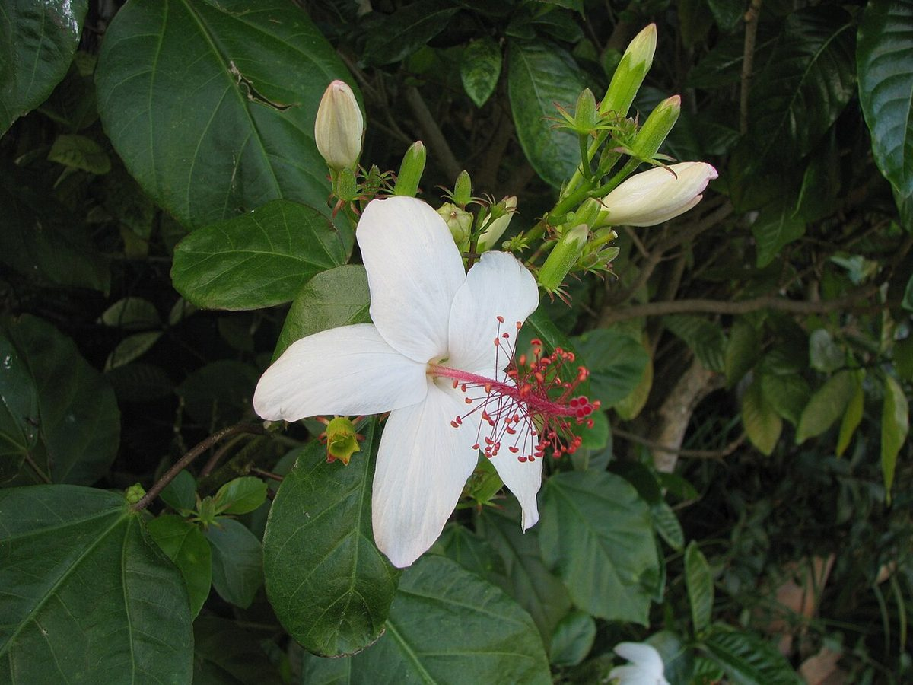

RARE & EXOTIC Valley mouth Riparian
Hibiscus waimeae subsp. hannerae
kokiʻo keʻokeʻo · Hannera's white hibiscus, Nā Pali white hibiscus



Quick facts
| Family | Malvaceae |
|---|---|
| Scientific name | Hibiscus waimeae subsp. hannerae |
| Hawaiian name(s) | kokiʻo keʻokeʻo |
| English name(s) | Hannera's white hibiscus, Nā Pali white hibiscus |
| Status | Endemic |
| Conservation | US Endangered (federally listed) |
| Coastal zones | Valley mouth Riparian |
| Occurrence | Kauaʻi endemic. Restricted to a small number of moist to mesic Nā Pali valleys — including Limahuli, Hanakāpīʻai, Hanakoa, and a handful of neighboring drainages — on shaded lower valley slopes and stream corridors. Extremely restricted range; most wild plants are behind the valley mouths a hiker sees from the coast rather than at the beach itself. |
How to identify
- Growth form
- Small to medium tree 4–7 m tall, with a slender trunk and open, somewhat sparse crown. Not a shrub.
- Size
- 4–7 m tall; trunk to about 15 cm diameter.
- Leaves
- Ovate to broadly ovate, 6–12 cm long, glossy green above and slightly paler below; margins entire to shallowly toothed. Leaves are smaller and narrower than in the more common upland subsp. *waimeae*.
- Flowers
- Large white hibiscus flowers 8–12 cm across, opening white in the morning and fading to pink through the day. The staminal column is slender, distinctly pink, and projects well past the petals — this pink column is the field mark that separates *H. waimeae* from other white Hawaiian hibiscuses.
- Fruit / seed
- Small dry brown capsule, opening into 5 valves; not conspicuous.
- Bark / stem
- Grey-brown, becoming lightly furrowed on older trunks.
- Where it sits on the coast
- Shaded lower slopes and stream corridors of moist Nā Pali valleys, typically from 60 to about 400 m elevation — reachable on foot from Kalalau Trail into Limahuli, Hanakāpīʻai, or Hanakoa but you should NOT collect, disturb, or approach any listed individual.
Clinchers (features that lock the ID)
- Large white hibiscus fading pink, with a distinctly pink projecting staminal column.
- Slender tree (not shrub) in shaded Nā Pali valley understory.
- Leaves smaller and narrower than the more common upland subsp. waimeae.
Look-alikes
- Hibiscus waimeae subsp. waimeae (Waimea white hibiscus) — The nominate subspecies is a broader-leaved plant of higher- elevation Kauaʻi and is not federally listed. Foliage is larger and coarser; flowers similar. If you are at a low-elevation Nā Pali valley bottom, subsp. *hannerae* is the expected taxon.
- Hibiscus arnottianus (kokiʻo keʻokeʻo, Oʻahu/Molokaʻi) — The other native white hibiscus is not native to Kauaʻi. Its staminal column tends to be white rather than the pink column characteristic of *H. waimeae*.
- Hibiscus tiliaceus (hau) — see this guide (Branch B) — Hau is a sprawling coastal tree with yellow-turning-orange flowers and heart-shaped leaves — very different from the white flower and ovate leaf of *hannerae*.
Ecology
A moist-valley understory tree; part of the low-elevation mesic and wet-forest flora of northwestern Kauaʻi. Threatened by feral ungulates (goats and pigs), rat seed predation, non-native understory plants that shade out seedlings, and habitat loss to hurricanes and landslides. [1], [2], [3], [5], [49]
Cultural significance
Kokiʻo keʻokeʻo (native white hibiscus) is one of the storied flowers of Hawaiʻi; a small number of native white hibiscuses produce a subtle fragrance, unusual in the genus. Respect any wild plants encountered — do not pick flowers or seed.